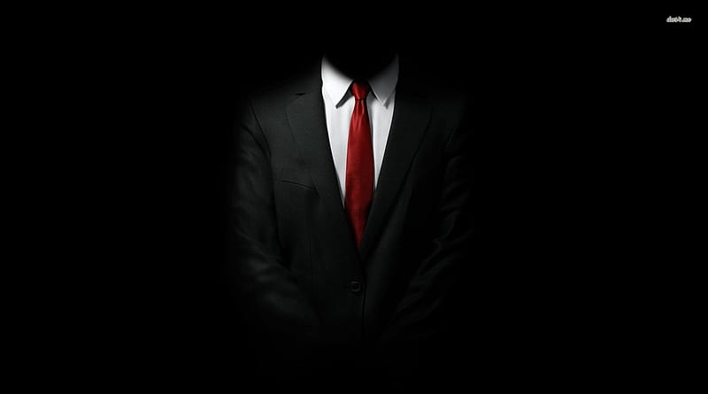

Philip comenzó la grabación de video tan pronto como Rose cerró la puerta del estudio de edición. Charlie Clark, el nuevo redactor de discursos principal del presidente, se movió a la pantalla. Ya se había familiarizado con el pequeño grupo en la habitación a prueba de sonido, pues había trabajado en su estación de noticias por tres años antes de tomar su posición actual en noviembre de 2016. Estaba vestido decentemente y hablaba con la elocuencia suficiente, pero sus manos traicionaban a sus nervios. Continuaba pasando sus dedos por su cabello, alisando su corbata y bebiendo de su agua. «…Y, a diferencia del presidente, yo puedo decir lo que quiera», bromeó Charlie durante la conferencia ante las risas de los periodistas que se habían reunido.«Pero, hablando en serio, el objetivo de un redactor de discursos no es decirle al presidente cómo se siente; no corremos ningún riesgo de dirigir el país accidentalmente.
Lo que hacemos es colocar los sentimientos del presidente, sentimientos por los que fue elegido, en las palabras perfectas. Digamos que el presidente está echando humo por una violación a los derechos humanos. El presidente es humano, así que tiene permitido estar enojado. De hecho, puede estar tan enojado, que su dicción admirada puede sufrir un desliz. Es mi trabajo elaborar un discurso que encapsule el enojo del presidente como la materialización verbal de su sentido de injusticia, para que él pueda comunicar esto al mundo»
Philip detuvo el video y habló: «Mientras el servicio secreto nos conducía afuera de esta conferencia, uno de ellos presionó un papel en mi mano. Era un código que Charlie y yo utilizábamos cuando éramos corresponsales de guerra en Afganistán. Decía que las frases declaradas cuando se tocó su corbata eran falsas». Philip reprodujo esos segmentos: «Yo puedo decir lo que quiera». «No corremos ningún riesgo». «El presidente es humano».